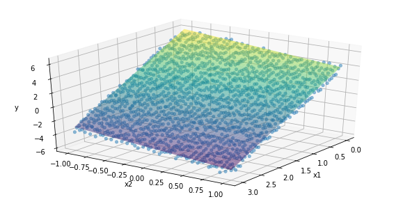
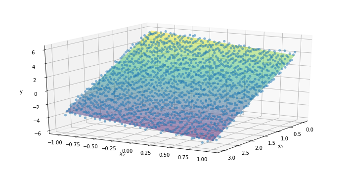
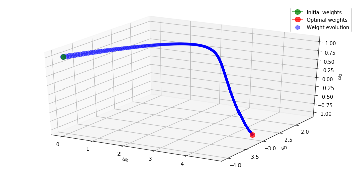
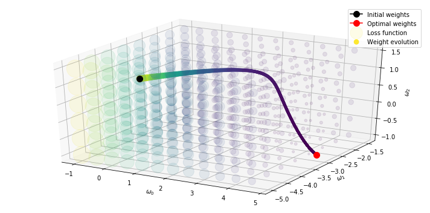
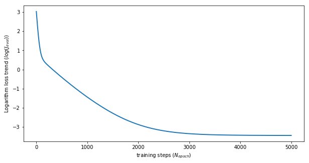
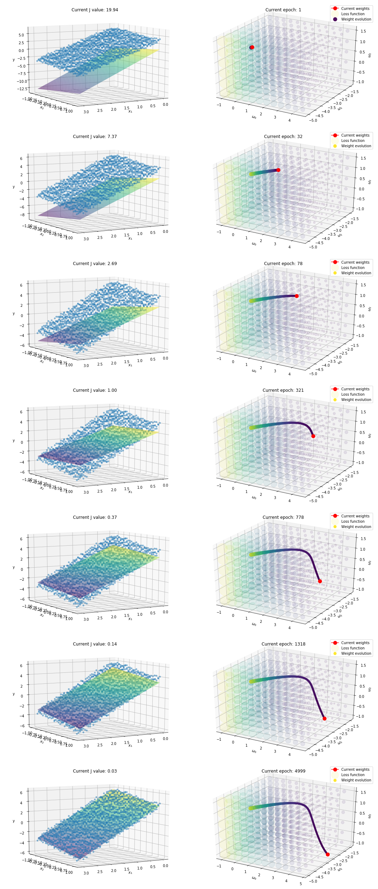

1. Introduction
We have introduced the concept of the linear-regression problem and the structure to solve it in a “machine-learning” fashion in this post, while we have applied the theory to a simple but practical case of linear-behaviour identification from a bunch of data that are generated in a synthetic way here.
We now extend the analysis to a multi-linear case where more than one feature (or input) are fed to the model to predict the outcome. A real-world application could be to estimate the weight of a vehicle engine based on maximum power, maximum torque and displacement.
We are going to implement the logic from scratch in Python and its powerful numerical library, Numpy, but the article structure is consistent to that used in the single-feature case. Feel free to go through these two post side by side to appreciate to what extent the code can be general and easily spot the differences.
2. Data generation
First we start generating some synthetic data (Npntx*Npnty=50*30 points).
We assume we know both the slope of the two inputs ($ \omega_1 = 3, \omega_2 = -1 $) and the intercept ($ \omega_0 = 5 $) of the plane we want to identify, but we also introduce some noise with a gaussian distribution and zero-mean to the plane to make the data source a bit closer to real-world scenarios.
The chart shows the generated data cloud that we feed to the learning algorithm to identify the plane specifications. Please keep in mind that the linear model of one feature can be visualized as a line, the same model of two features as a plane, while standard and effective visualization techniques fail to represent models of more than two features. However, it is common practice to have an abstract idea of such a model as a hyperplane.
import numpy as np
import matplotlib.pyplot as plt
%matplotlib inline
import pandas as pd
from mpl_toolkits import mplot3d
Npntx, Npnty = 50, 30 # number of points
x1_ = np.linspace(0, 3, Npntx)
x2_ = np.linspace(-1, 1, Npnty)
xx1, xx2 = np.meshgrid(x1_, x2_)
noise = 0.25*(np.random.randn(Npnty,Npntx)-1)
w0, w1, w2 = 5, -3, -1
yy = w0 + w1*xx1 + w2*xx2 + noise
zz = w0 + w1*xx1 + w2*xx2
plt.figure(figsize=(10, 5))
ax = plt.axes(projection='3d')
ax.plot_surface(xx1, xx2, zz, rstride=1, cstride=1, cmap='viridis', edgecolor='none', alpha=0.5)
ax.scatter(xx1, xx2, yy, cmap='viridis', linewidth=0.5, alpha=0.5)
plt.xlabel("X1")
plt.ylabel("X2")
plt.ylabel("Y")
ax.set_xlabel('x1')
ax.set_ylabel('x2')
ax.set_zlabel('y')
ax.view_init(30, 35)
plt.show()

The dataset is generated by creating two 2D arrays, one for inputs and one for outputs.
The input array, XX, is the horizontal concatenation of a column of 1s, as many as the length of the initial flattened 1D array xx, and the flattened version of the two input arrays, xx1 and xx2.
We first stack the three 1D arrays vertically and then transpose it to get the examples (50*30=1500) over the rows and the features over the columns (1+2).
The output 2D array is just a single column filled with the y values.
Here the shape of the arrays.
XX = np.vstack((np.ones_like(xx1.flatten()), xx1.flatten(), xx2.flatten())).T
ww = np.array([0, -4, 1]).reshape(-1, 1)
YY = yy.flatten().reshape(-1,1)
[XX.shape, YY.shape]
[(1500, 3), (1500, 1)]
3. Loss function
Let us recall the loss function, $J$, where $x^j$ and $y^j$ are the input and output of the j-th example and $n$ is the number of features (2):
$$ J = \frac{1}{2}\sum_{j=1}^{m} (y^j- \sum_k^{n} (\theta_k \cdot x^j_k) )^2 $$
$$ J = \frac{1}{2}\sum_{j=1}^{m} (y^j-\theta^T \cdot x^j)^2 $$
We realize that the formula is also valid for the multi-linear case since its format is already vectorized to handle two parameters in the single-feature case, one for the intercept and one for the feature itself. In this case, the number of features is two and the parameter array to learn has a size equal to three. We only need to extend the columns of the X array and the length of the $\theta$ array by one.
The final loss function (Root mean squared error) code is as simple as what follows. It is the Numpy implementation of this Scikit-learn function.
def lossFunction(XX, YY, ww):
Npnt = XX.shape[0]
J = np.sum((np.dot(XX, ww) - YY)**2, axis=0)/2/Npnt
return J
lossFunction(XX, YY, ww)
array([ 20.64306295])
4.Gradient descent
We recall the equation of the gradient of the loss function to apply the gradient descent algorithm to the multi-linear regression problem, where the $k$ element is:
$$ \frac{\partial J}{\partial \theta_k} = \sum_j^{m} (y^j-\theta^T \cdot x^j)\cdot x_k^j $$
Keep in mind that the input feature associated with the first parameter $\theta_0$, which is the intercept, is always 1.
Code-wise, a vectorized implementation of the parameter update step is fundamental to achieve fast computation.
The input data are stored into a 2D array, XX, where m and n+1 are the number of rows and columns, respectively.
In the below code example, m=6 and n=2.
Parameters are allocated into a 2D array, ww, with n+1 rows and one column. Numpy dot operator returns the matrix multiplication of the two 2D arrays, whose size is (m, 1).
We then subtract element-wise the result with the ground-truth output, y, and broadcast the resulting (m, 1) array, $\epsilon$, to perform the element-wise product with the input array, XX.
X_ = np.arange(18).reshape(-1,3)
Y_ = np.arange(6).reshape(-1,1)
w_ = np.arange(3).reshape(-1,1)
epsilon = np.dot(X_, w_) - Y_
print(X_)
print('-'*10)
print(w_)
print('-'*10)
print(epsilon)
[[ 0 1 2]
[ 3 4 5]
[ 6 7 8]
[ 9 10 11]
[12 13 14]
[15 16 17]]
----------
[[0]
[1]
[2]]
----------
[[ 5]
[13]
[21]
[29]
[37]
[45]]
We exploit the broadcasting technique to implement the vectorized code. See official documentation and further details in my previous post and a very clear post from the author of Python Data Science Handbook. The (m,1) array, $\epsilon$, represent the constant part for each parameter $\theta_k$.
print(epsilon.shape)
print(X_.shape)
print(epsilon * X_)
print((epsilon * X_).shape)
(6, 1)
(6, 3)
[[ 0 5 10]
[ 39 52 65]
[126 147 168]
[261 290 319]
[444 481 518]
[675 720 765]]
(6, 3)
We then sum through the examples to get the gradient array and reshape it to have a 2D column array (n+1, 1) that match the size of the current parameter vector estimate.
grad_ = np.sum((np.dot(X_, w_) - Y_) * X_, axis=0)
print(grad_.shape)
print('-'*10)
print(grad_.reshape(-1,1))
(3,)
----------
[[1545]
[1695]
[1845]]
5. Training
Here follows the complete code of the learning process, where the model parameters are changed for Nepoch times.
The parameters and the corresponding loss function value are stored in associated lists and returned at the end of the function call.
def gradientDescent(XX, YY, ww, lr=0.1, Nepoch=1500):
Npnt = XX.shape[0]
Jevol, wevol = [], []
for _ in range(Nepoch):
Jevol.append(lossFunction(XX, YY, ww))
wevol.append(ww[:,0])
ww = ww - lr/Npnt * np.sum((np.dot(XX, ww) - YY) * XX, axis=0).reshape(-1,1)
return np.array(wevol), np.array(Jevol)
wOpt and Jopt are the optimal parameter values and the minimum loss that are stacked at the bottom of the evolution lists. The final values for wOpt are very close to the ones used to generate the data.
J = lossFunction(XX, YY, ww)
Nepoch, lr = 5000, 0.005
wEvol, Jevol = gradientDescent(XX, YY, ww, lr, Nepoch)
wOpt, Jopt = wEvol[-1,:], Jevol[-1]
print('optimal weights: ' + str(wOpt))
print('optimal loss: ' + str(np.log(Jopt)))
optimal weights: [ 4.73739369 -2.99593775 -0.99554761]
optimal loss: [-3.43847623]
The below figure compares the plane with optimal parameters, wOpt, to the cloud of points used to train the model.
ypred = wOpt[0] + wOpt[1]*xx1 + wOpt[2]*xx2
plt.figure(figsize=(10, 5))
ax = plt.axes(projection='3d')
ax.plot_surface(xx1, xx2, ypred, rstride=1, cstride=1, cmap='viridis', edgecolor='none', alpha=0.5)
ax.scatter(xx1, xx2, yy, cmap='viridis', linewidth=0.5, alpha=0.5)
ax.set_xlabel('$x_1$')
ax.set_ylabel('$x_2$')
ax.set_zlabel('y')
ax.view_init(20, 30)
plt.tight_layout()
plt.show()

6. Parameter evolution
Here we plot the evolution of the parameters $\omega$ over the Nepoch training steps.
The initial and final values are depicted with the green and red points, respectively.
The size of each intermediate blue point is proportional to the loss function, where the smaller the point, the lower the loss, the better the model performance.
plt.figure(figsize=(10, 5))
ax = plt.axes(projection='3d')
score = Jevol/np.max(Jevol)
ax.scatter(wEvol[:,0], wEvol[:,1], wEvol[:,2], c='b', s=10+100*score, alpha=0.5, label='Weight evolution')
ax.plot3D(wEvol[:1,0], wEvol[:1,1], wEvol[:1,2], 'g', marker='o', markersize=10, alpha=0.75, label='Initial weights')
ax.plot3D(wEvol[-1:,0], wEvol[-1:,1], wEvol[-1:,2], 'r', marker='o', markersize=10, alpha=0.75, label='Optimal weights')
ax.set_xlabel("$\omega_0$")
ax.set_ylabel("$\omega_1$")
ax.set_zlabel("$\omega_2$")
plt.legend()
#ax.view_init(10, 60)
plt.tight_layout()
plt.show()

In the following plot, we compare the evolution of the parameters $\omega$ with the loss function 2D map.
To this end, we need to create a grid for every combination of $\omega_0$, $\omega_1$ and $\omega_2$, using meshgrid.
The three 3D (12, 8, 6)-shaped arrays are then flattened and vertically stacked to obtain the parameter meshgrid, wmg, which contains $12*8*6=576$ three-element tuples. We want to calculate the loss function for each triple of parameters.
The loss function requires a (3,1) array, so we need to reshape the 1D array that we get from for-iterating along the wmg rows.
The Python list comprehension helps to perform this process that returns a list of 576 loss values corresponding to every point of the meshgrid. The final step is to convert the list into an array and reshape it into a 3D whose size is as equal as the initial 3D parameter arrays, w0mg, w1mg and w2mg.
step = 0.5
w0s = np.arange(-1, 5, step)
w1s = np.arange(-5, -1, step)
w2s = np.arange(-1, 2, step)
w0mg, w1mg, w2mg = np.meshgrid(w0s, w1s, w2s, indexing='ij')
wmg = np.vstack((w0mg.flatten(), w1mg.flatten(), w2mg.flatten())).T
print('array size:')
print('Size of the three 1D arrays: {}, {}, {}'.format(w0s.shape, w1s.shape, w2s.shape))
print('Size of the three meshgrid arrays: {}'.format(w0mg.shape))
print('Size of the parameter meshgrid: {}'.format(wmg.shape))
array size:
Size of the three 1D arrays: (12,), (8,), (6,)
Size of the three meshgrid arrays: (12, 8, 6)
Size of the parameter meshgrid: (576, 3)
w_ = np.array([-3.5, 5, 2]).reshape(-1, 1)
print('Random parameter vector: \n{}'.format(w_))
print('Loss value for that parameter vector: {}'.format(lossFunction(XX, YY, w_)))
Random parameter vector:
[[-3.5]
[ 5. ]
[ 2. ]]
Loss value for that parameter vector: [ 33.69217748]
Jlist = [lossFunction(XX, YY, wmg[kk,:].reshape(-1, 1)) for kk in range(wmg.shape[0])]
print(len(Jlist))
576
Jmap = np.array(Jlist).reshape(-1, w1s.shape[0], w2s.shape[0])
print(Jmap.shape)
(12, 8, 6)
The plot shows the parameter evolution on top of the contour plot of the 3D loss function, where the greater the loss value the warmer the colour.
plt.figure(figsize=(10, 5))
ax = plt.axes(projection='3d')
ax.scatter(w0mg.flatten(), w1mg.flatten(), w2mg.flatten(),
cmap='viridis', c=Jmap.flatten(), s=10+20*Jmap.flatten(), alpha=0.1, label='Loss function')
score = Jevol/np.max(Jevol)
ax.scatter(wEvol[:,0], wEvol[:,1], wEvol[:,2], c=score, s=10+100*score, alpha=0.95, label='Weight evolution')
ax.plot3D(wEvol[:1,0], wEvol[:1,1], wEvol[:1,2], 'k', marker='o', markersize=10, alpha=1, label='Initial weights')
ax.plot3D(wEvol[-1:,0], wEvol[-1:,1], wEvol[-1:,2], 'r', marker='o', markersize=10, alpha=1, label='Optimal weights')
ax.set_xlabel("$\omega_0$")
ax.set_ylabel("$\omega_1$")
ax.set_zlabel("$\omega_2$")
plt.legend()
#ax.view_init(10, 60)
plt.tight_layout()
plt.show()

This plot reports the logarithmic trend of the loss function over the training steps.
plt.figure(figsize=(10, 5))
plt.plot(np.log(Jevol), lw=2)
plt.xlabel("training steps ($N_{epoch}$)")
plt.ylabel("Logarithm loss trend ($log(J_{evol})$)")
plt.show()

The final plot wants to summarize the post by visualizing the training process at those steps where the logarithm of the loss function assumes integer values.
We create a list, idxs, that stores the Nrow = 6+1 indices of the Jevol array that correspond to such training steps, in addition to the final training step.
idxs = [np.where(np.log(Jevol)<kk)[0][0] for kk in range(3, -3, -1)] + [Jevol.shape[0]-1]
Nrow = len(idxs)
Nstep = int(Nepoch/Nrow)
print(Nrow)
7
The chart has a matrix structure, with as many rows as the training steps to analyse, Nrow, and two columns, the left-most one that compares the data point cloud to the current model (colorful plane) and highlights the current loss (J value), the right-most one that shows the trajectory of the model parameters up to the current epoch within the 3D parameter space.
fig = plt.figure(figsize=(15, Nrow*5))
for kk, idx in enumerate(idxs):
ax = fig.add_subplot(Nrow, 2, 2*kk+1, projection='3d')
ypred_ = wEvol[idx,0] + wEvol[idx,1]*xx1 + wEvol[idx,2]*xx2
ax.plot_surface(xx1, xx2, ypred_, rstride=1, cstride=1, cmap='viridis', edgecolor='none', alpha=0.5)
ax.scatter(xx1, xx2, yy, cmap='viridis', linewidth=0.5, alpha=0.5)
ax.set_xlabel('$x_1$')
ax.set_ylabel('$x_2$')
ax.set_zlabel('y')
plt.title("Current J value: {0:.2f}".format(Jevol[idx, 0]))
ax.view_init(10, 60)
ax = fig.add_subplot(Nrow, 2, 2*kk+2, projection='3d')
ax.scatter(w0mg.flatten(), w1mg.flatten(), w2mg.flatten(),
cmap='viridis', c=Jmap.flatten(), s=10+20*Jmap.flatten(), alpha=0.1, label='Loss function')
score = Jevol[:idx]/np.max(Jevol)
ax.scatter(wEvol[:idx,0], wEvol[:idx,1], wEvol[:idx,2], c=score, s=10+100*score, alpha=0.95, label='Weight evolution')
ax.plot3D(wEvol[idx:idx+1,0], wEvol[idx:idx+1:,1], wEvol[idx:idx+1:,2], 'r', marker='o', markersize=10,
alpha=1, label='Current weights')
ax.set_xlabel("$\omega_0$")
ax.set_ylabel("$\omega_1$")
ax.set_zlabel("$\omega_2$")
plt.title("Current epoch: " + str(idx))
ax.legend()
plt.tight_layout()
plt.show()
